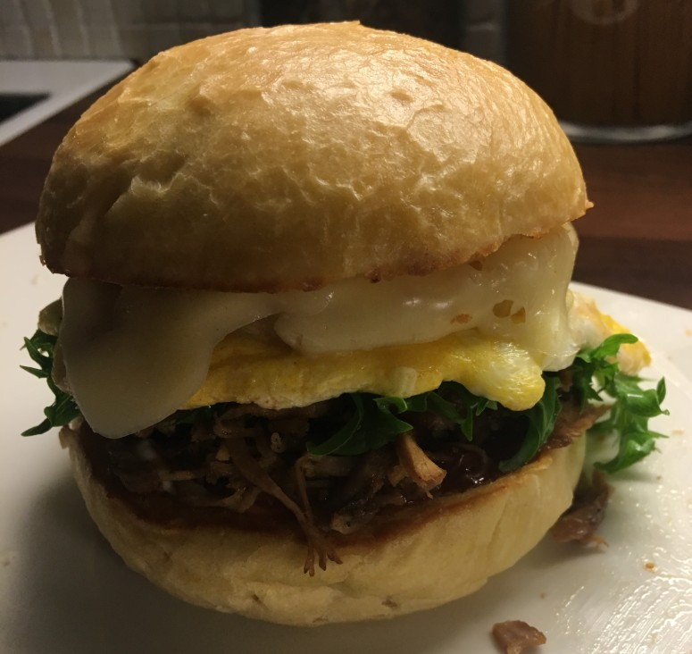

Joskus tulee tehtyä myös vähän perempia keittoja. Kuvassa kermainen maa-artisokkakeitto. Vähän krutonkeja ja balsamicoa päälle.

Ei kait sitä ilmanburgeriakaan voi olla. Itse väännetyillä sämpylöillä ja kaiken maailman täytteillä. Näistä tulee yleensä suht täysinäinen olo.